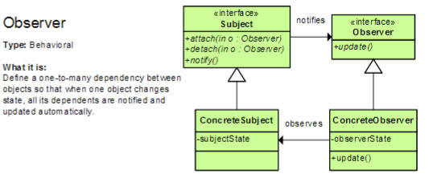
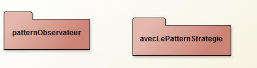
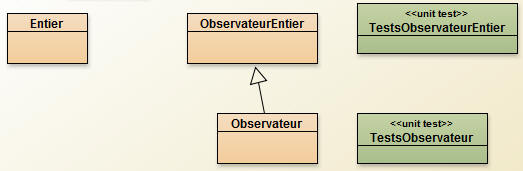
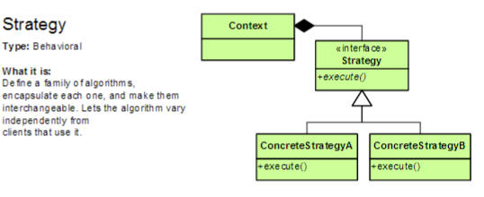

Exercices dirigés NFP121
Le Patron Observateur

La classe Subject du schéma ci-dessus est remplacée par java.util.Observable, et l'interface Observer par java.util.Observer
Le projet Bluej pour cet ED est constitué de deux paquetages

Choisissez le paquetage patternObservateur

QUESTION 1 : Complétez la classes Entier ci dessous, cette classe doit permettre une exécution sans échec de la classe de tests unitaires TestsObservateurEntier fournie ci-dessous
La classe Entier est à compléter
package patternObservateur;
import java.util.Observable;
public class Entier extends Observable{
private int valeur;
public Entier(int valeur){
this.valeur = valeur;
}
public void inc(){
this.valeur++;
// à compléter
}
public void dec(){
this.valeur--;
// à compléter
}
public int getValeur(){return this.valeur;}
public void setValeur(int valeur){
this.valeur = valeur;
// à compléter
}
public String toString(){
return Integer.toString(this.valeur);
}
public String toString(int base){
return Integer.toString(this.valeur, base);
}
public boolean equals(Object obj){
if(obj instanceof Entier){
Entier e = (Entier) obj;
return this.valeur == e.valeur;
}
return false;
}
public int hashCode(){
return this.valeur;
}
public static Entier parseEntier(String s) throws NumberFormatException{
int valeur = Integer.parseInt(s);
return new Entier(valeur);
}
}
La classe ObservateurEntier est fournie et complète, et ne doit pas être modifiée
import java.util.Observer;
import java.util.Observable;
public class ObservateurEntier implements Observer{
public void update(Observable source, Object arg){
System.out.println(source + "update !!! " + arg);
}
}
La classe de tests unitaires doit être lue attentivement avant de compléter la classe Entier
package patternObservateur;
import java.util.Observable;
import java.util.Observer;
public class TestsObservateurEntier extends junit.framework.TestCase{
private class ObservateurTest extends ObservateurEntier {
private int notifications;
private Observable source;
public ObservateurTest(Observable src){
this.source = src;
}
public void update(Observable src, Object arg){
super.update(src,arg);
notifications++;
}
public int getNotifications(){
int nombre = notifications;
notifications =0;
return nombre;
}
public Observable getSource(){
return source;
}
}
public void testUnEntierUnObservateurTest(){
Entier e = new Entier(1);
ObservateurTest obs = new ObservateurTest(e);
e.addObserver(obs);
e.inc();
assertEquals("inc() n'engendre pas de notifications ???", 1, obs.getNotifications());
e.dec();
assertEquals("dec() n'engendre pas de notifications ???",1, obs.getNotifications());
e.setValeur(e.getValeur()+1);
assertEquals("setValeur() n'engendre pas de notifications ???",1, obs.getNotifications());
e.inc();e.inc();
assertEquals(2, obs.getNotifications());
}
public void testUnEntierDeuxObservateurTests(){
Entier e = new Entier(1);
ObservateurTest o1 = new ObservateurTest(e);
e.addObserver(o1);
ObservateurTest o2 = new ObservateurTest(e);
e.addObserver(o2);
e.inc();
assertEquals("inc() n'engendre pas de notifications ???", 1, o1.getNotifications());
assertEquals("inc() n'engendre pas de notifications ???", 1, o2.getNotifications());
e.dec();
assertEquals("dec() n'engendre pas de notifications ???",1, o1.getNotifications());
assertEquals("dec() n'engendre pas de notifications ???",1, o2.getNotifications());
e.setValeur(e.getValeur()+1);
assertEquals("setValeur() n'engendre pas de notifications ???",1, o1.getNotifications());
assertEquals("setValeur() n'engendre pas de notifications ???",1, o2.getNotifications());
e.inc();e.inc();
assertEquals(2, o1.getNotifications());
assertEquals(2, o2.getNotifications());
}
public void testDeuxEntiersUnObservateurTest(){
Entier e1 = new Entier(1);
Entier e2 = new Entier(1);
ObservateurTest obs = new ObservateurTest(e1);
e1.addObserver(obs);
e2.addObserver(obs);
e1.inc();e2.inc();
assertEquals("inc() n'engendre pas de notifications ???", 2, obs.getNotifications());
e1.dec();
assertEquals("dec() n'engendre pas de notifications ???",1, obs.getNotifications());
e2.setValeur(e2.getValeur()+1);
assertEquals("setValeur() n'engendre pas de notifications ???",1, obs.getNotifications());
e1.inc();e2.inc();
assertEquals(2, obs.getNotifications());
}
public void testInterrogationEntier(){
Entier e = new Entier(1);
ObservateurTest obs = new ObservateurTest(e);
e.addObserver(obs);
int v = e.getValeur();
assertTrue("getValeur() engendre (au moins)une notification ???", 0==obs.getNotifications());
String s = e.toString();
assertTrue("toString() engendre (au moins)une notification ???", 0==obs.getNotifications());
}
}
Dès que votre classe Entier a été complétée, complétez cette classe de tests
QUESTION 2 : Une autre classe de tests est fournie, elle permet de mémoriser dans une pile toutes les notifications effectuées, complétez cette classe de tests et vérifiez le bon fonctionnement
package patternObservateur;
import java.util.Observable;
import java.util.Observer;
import java.util.Stack;
public class TestsObservateur extends junit.framework.TestCase{
private static class ObservateurTest implements Observer{
public static class Notification{
protected Object arg;
protected Observable source;
Notification(Observable source, Object arg){
this.source = source;
this.arg = arg;
}
}
private Stack<Notification> stk;
public ObservateurTest(){
this.stk = new Stack<Notification>();
}
public void update(Observable src, Object arg){
stk.push(new Notification(src,arg));
}
public Notification getNotification(){
return stk.peek();
}
public Notification lastNotification(){
return stk.pop();
}
public boolean isEmpty(){
return stk.isEmpty();
}
public void reset(){
stk.clear();
}
}
public void testUnEntierUnObservateur(){
Entier e = new Entier(1);
ObservateurTest obs = new ObservateurTest();
assertTrue(obs.isEmpty());
e.addObserver(obs);
assertTrue(obs.isEmpty());
e.inc();
assertFalse("pas de notifications ???", obs.isEmpty());
ObservateurTest.Notification notification = obs.lastNotification();
assertEquals("la source est-elle correcte ???",e,notification.source);
assertEquals("l'argument est-il correct ???",2,notification.arg);
obs.reset();
e.dec();
e.setValeur(33);
assertFalse("pas de notifications ???", obs.isEmpty());
notification = obs.lastNotification();
assertEquals("la source est-elle correcte ???",e,notification.source);
assertEquals("l'argument est-il correct ???",33,notification.arg);
assertFalse("pas de notifications ???", obs.isEmpty());
notification = obs.lastNotification();
assertEquals("la source est-elle correcte ???",e,notification.source);
assertEquals("l'argument est-il correct ???",1,notification.arg);
assertTrue("encore une notification, curieux ???", obs.isEmpty());
}
}
QUESTION 3 : On souhaite maintenant installer un observateur par méthode, un observateur pour "inc", un autre pour "dec" et un dernier pour "setValeur", chaque observateur affiche simplement le nombre d'appel de la méthode auquel il est associé. Il vous faudra pour cela modifier la classe Entier.
Ce patron est-il le plus approprié ? confer le patron publish/subscribe à lire sur wikipedia
un extrait : Publish-subscribe (littéralement : publier-souscrire) est un mécanisme de publication et de souscription de messages dans lequel les émetteurs (publisher, littéralement : éditeurs) ne destinent pas a priori les messages à des destinataires (subscriber, littéralement : abonné). À la place, une catégorie est associée aux messages émis sans savoir s'il y a des destinataires. De la même manière, les destinataires souscrivent aux catégories les intéressant, et ne reçoivent que les messages correspondant, sans savoir s'il y a des émetteurs.
LECTURE : Dès la mise en ligne du projet Bluej, vérifiez l'usage du patron Strategie dans le paquetage avecLePatternStrategie, le contenu de la méthode update est décidée à la configuration, en fonction d'une stratégie

Post-liminaire :
Préparation du tp5, exécution et tests de l'applette de l'énoncéconsole> appletviewer http://jfod.cnam.fr/progAvancee/tp5/tp5.html
avec si nécessaire sous windows set PATH=D:\BlueJ-315\jdk\bin;%PATH%Depuis votre navigateur http://jfod.cnam.fr/progAvancee/tp5/tp5.html
/* Une idée...